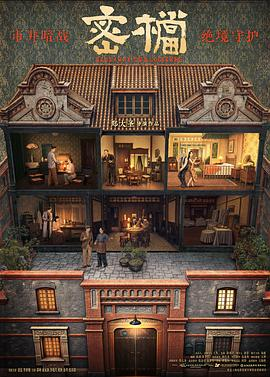

密档
又名：一号秘档 / Hideaway: The Dossiers
一份另类的谍战片，摄影和灯光太高级了，对镜子或玻璃之类所产生的虚像玩弄得手到擒来炉火纯青，房间里的滴水声好明显。故事上见微知著，聚焦于一对地下党夫妻无论工作无论私下的故事。小楼里的各位房客各有特色，其中黄龄最为出色。关于深景深大广角的跟拍难不成真没办法不穿帮不拍到摄影师的影子，在演员最用力的时刻却出现最低级的错误，很可惜。若论观感最为相似的，大抵是程耳的《无名》吧。题外话，我们这儿的影院竟然用《密档》的海报背包来宣传《牛来》。
作品信息
| 导演 | 郑大圣 |
| 编剧 | 张琪 / 贺子壮 |
| 主演 | 袁弘 / 李妍锡 / 邵峰 / 谢承颖 / 李晓川 / 黄龄 / 徐祥 / 张羽霖 / 宗晓军 / 邵凯 / 叶泽宁 / 郑宏爽 / 宋一雄 / 王小雨 / 刘岳源 |
| 类型 | 剧情 / 悬疑 |
| 制片国家/地区 | 中国大陆 |
| 语言 | 汉语普通话 |
| 上映日期 | 2026-08-28(中国大陆) / 2026-08-07(大众电影百花奖) |
| 片长 | 132分钟 |
| IMDb | tt44864498 |
说过什么
2026-08-28 22:31:09
广播 · 看过 · ★★★★☆
一份另类的谍战片，摄影和灯光太高级了，对镜子或玻璃之类所产生的虚像玩弄得手到擒来炉火纯青。故事上见微知著，聚焦于一对地下党夫妻无论工作无论私下的故事。小楼里的各位房客各有特色，其中黄龄最为出色。关于深景深大广角的跟拍难不成真没办法不穿帮不拍到摄影师的影子，在演员最用力的时刻却出现最低级的错误，很可惜。若论观感最为相似的，大抵是程耳的《无名》吧。题外话，我们这儿的影院竟然用《密档》的海报背包来宣传《牛来》。
最后一次看到是 2026-10-07T23:12:39+08:00 · 豆瓣原页